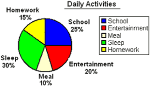

<!--
  Generated template for the StatusPage page.

  See http://ionicframework.com/docs/components/#navigation for more info on
  Ionic pages and navigation.
-->
<ion-header>

  <ion-navbar>
    <ion-title>Status</ion-title>
  </ion-navbar>

</ion-header>


<ion-content padding>
<ion-card>
  
  
  <ion-card-content>
<ion-card-title>
  Status of your goals
</ion-card-title>
The Stutus of the entire process undertaken is displayed!
  </ion-card-content>
</ion-card>
</ion-content>
